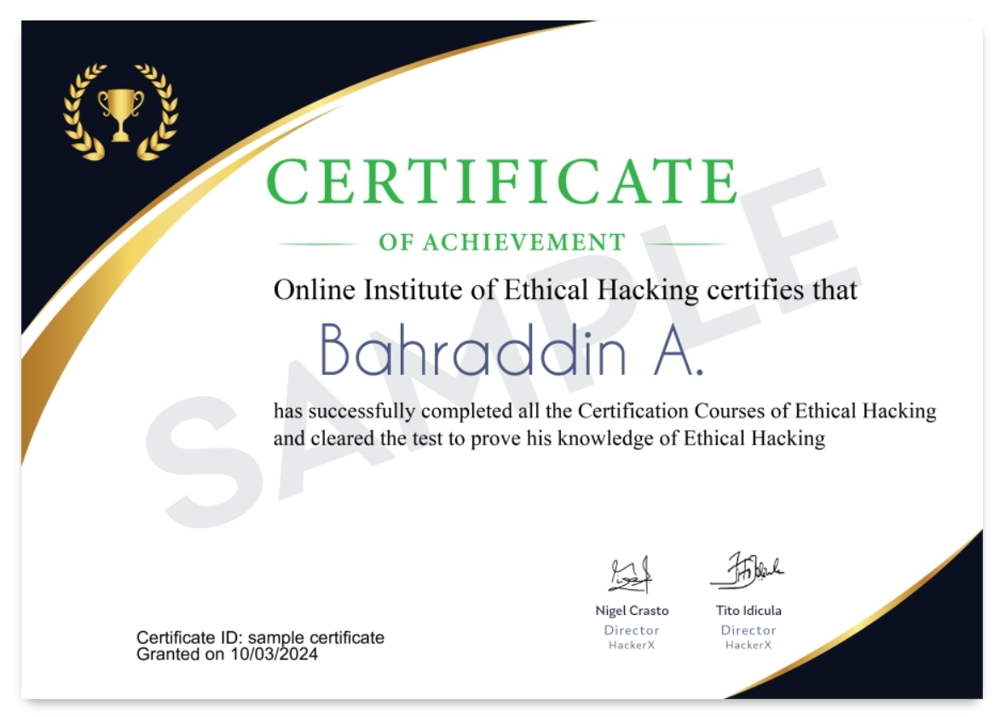

YAA ASMARY
did you want this music?
here it is
يا حبيبي وينك وين؟ غايب علي ديل اليومين
يا حبيبي وينك وين؟ غايب علي ديل اليومين
الدنيا ضاقت بي، الدنيا ضاقت بي
ديل يومين ولا سنتين، ديل يومين ولا سنتين
يا حبيبي وينك وين؟ غايب علي ديل اليومين
الدنيا ضاقت بي، الدنيا ضاقت بي
ديل يومين ولا سنتين، ديل يومين ولا سنتين
يا حبيبي وينك وين؟ أسمري يا نور العين
يا أسمري يا نور العين، يا حبيب قلبي إنت وينك وين؟
يا أسمري يا نور العين، يا حبيب قلبي إنت وينك وين؟
إنت بس لو غبت علي ساعتين، بس لو غبت علي ساعتين
ما بقدر بكتلني الحنين، انا ما بقدر بكتلني الحنين
يا حبيبي وينك وين؟ أسمري يا نور العين
خلاص كفاية علي تغيب، كفاية علي أنا يا حبيب
خلاص كفاية علي تغيب، كفاية علي أنا يا حبيب
إنت بس لو عارف صوتك ده، بس لو عارف صوتك
صوتك لجروحي طبيب، انا صوتك لجروحي طبيب
الدنيا ضاقت بي، ضاقت بي
ديل يومين ولا سنتين، ديل يومين ولا سنتين (ولا سنتين)

click here to register